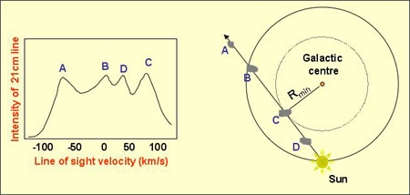

Interstellar gas clouds consisting mostly of neutral hydrogen atoms (commonly called HI, or H-one atoms by astronomers) are usually referred to as HI clouds. They are very abundant, but mainly confined to the spiral arms in the disks of galaxies in a layer less than 300 light years thick. They have an average temperature of about 100 Kelvin and densities that range from 1 – 100 atoms/cm3 spread over distances of between 15 and 20 light years.
Because they are cold, they do not emit radiation in the visible part of the spectrum. Rather, they are detected using the spin-flip transition at 21cm in the radio, and have been particularly important in mapping out the structure of our own Galaxy.
How to map the Galaxy from within
Radio waves are largely unaffected by dust, allowing us to detect HI clouds throughout our Galaxy. Each HI cloud along a particular line of sight will be moving at a slightly different speed relative to us, meaning that the 21cm radiation emitted by the cloud will be Doppler shifted by a different amount when it arrives at our telescopes.

In this example, the existence of a HI cloud is shown as a peak in the intensity of the 21cm emission. A cloud that is orbiting at the same radius as the Sun ( B ) will have a line of sight velocity of zero since it is moving at the same speed as the Sun. Clouds with orbits closer to the Galactic centre will be moving faster than the Sun and will have positive line of sight velocities ( B, D ), while clouds located further from the Galactic centre ( A ) will have negative line of sight velocities since they are moving slower than the Sun. Put another way, the cloud with the highest line of sight velocity ( C ) is closest to the centre of the galaxy and the cloud with the lowest line of sight velocity ( A ) is the most distant from the centre.
By observing HI clouds along many different lines of sight we were able to build up a map of the HI clouds in our Galaxy to discover that we live in a spiral galaxy with four major spiral arms.